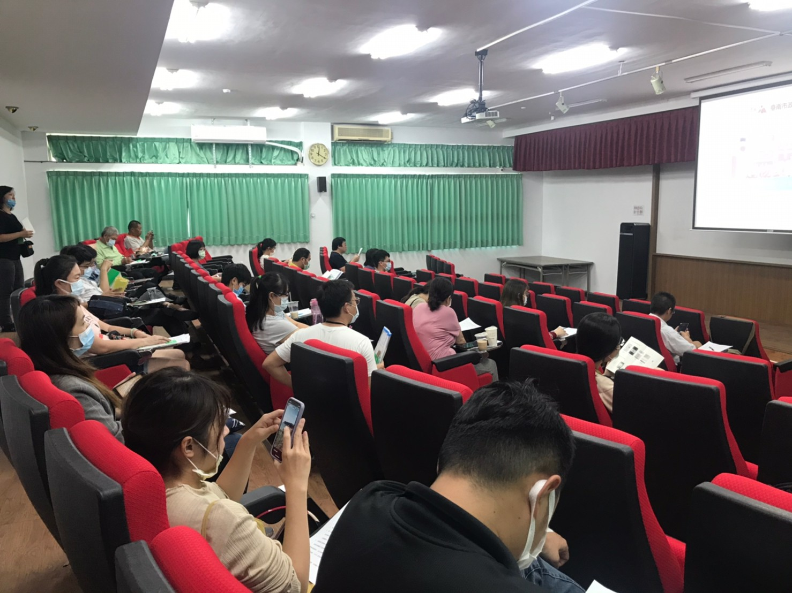

招商說明會實景
活動專案現場與專案規劃落地瞬間。

高婕恩 · 行銷策略顧問
更自然、不裁切，保持形象照原始構圖。
Digital Strategy Consultant
擁有 15 年 行銷、數位服務與平台專案經驗。擅長整合行銷策略、數位工具、服務流程與專案執行。
曾跨足美商全通行銷集團、錫恩資訊、高盛大等多家知名企業，負責大型政府專案及企業核心品牌的數位轉型推進。具備卓越的跨團隊協作與客戶溝通能力，致力於將虛實活動、需求與成效轉化成最可行的「落地方案」。
不流於天馬行空。能完美兼容商業目標與實務流程設計，確保專案具有實際產出，並維持最高等級的使用者體驗與顧客轉換。
曾主導及推進高雄市新聞局 APP、交通行動服務 MaaS、台東好玩卡及熱氣球售票系統，具備完整的系統前期規劃與營運優化經驗。
在面對大型政府部門經發局、高雄市新聞局與民間品牌（波蜜果菜汁、新東陽、獨身貴族等）時，皆展現高EQ、強專案調度力與極為穩定的信賴感。
「我不只規劃策略，我更協助你的組織搭建起可持續被團隊延續的策略框架、內容節奏與執行流程，讓行銷與工具真正內化為你的持續成長力。」
提供以成效為核心的服務，協助品牌將市場需求、媒體策略、數位工具與實際執行整合成可衡量的商務成果。
從精密的需求分析切入，釐清目標客群、核心溝通重點及資源精準配置。規劃網路媒體策略及提案簡報，確保每一項投入對應明確 ROI。
全方位掌握網站及 APP 服務架構。完美梳理使用者動線、流程設計及體驗優化。降低前後端溝通落差，大幅提升轉換與留存效率。
擁有承接大型城市級、政府及民間大型虛實活動整合的卓越實戰。穩定掌握進度、管控預算，以高度執行力推動最具影響力的成果。
精準掌握社群脈動、文案設計與高美感設計溝通。能客製化打造最具感染力的內容節奏，並透過行銷異業資源整合，拓展品牌深度與知名度。
運用嚴謹的營運數據與使用者行為模型，持續檢視行銷及平台表現。針對流失點優化流程，讓行銷成為組織內部持續成長的引擎。
擁有極高的專案敏感度，扮演「開發/設計技術」與「商務/客戶端」之間的最佳轉譯者。減少開發落差、理順溝通節點。
橫跨大型公部門專案、百萬人級城市購物節，到交通出行、觀光售票系統平台的完整導入歷程。

活動專案現場與專案規劃落地瞬間。

展示活動現場調度與專案實戰威力。

場景影像呈現從策略到執行的完整落地。
負責超大型公部門促購振興方案的活動執行。整合多元異業通路，透過創新的即時數位平台抽獎流程機制，成功引爆千萬級發票登錄量，創造極高話題聲量。
連續參與推動高雄標誌性的城市節慶與購物盛典。協助整合高雄市政府經發局、商圈代表與在地店家，規劃精緻的數位行銷提案與媒體策略，提振觀光零售與實體消費成果。
深入參與推動台東年度最核心的大型IP售票與旅遊卡流程。理順線上售票、預約、現地取票等複雜邏輯與動線，提供數十萬遊客流暢、不崩潰的購票與入園體驗。
跨足高度專業的 Mobility 數位科技領域。參與規管與對接跨運輸載具（捷運、公車、共享運具等）的資訊與票證服務，並聚焦於整合使用者真正的需求。
協同多方團隊推進電玩展、遊戲趴專用 APP 產品。將實體活動與 APP 的打卡闖關、抽獎機制、場域互動緊密勾連，讓活動趣味性與觸及率雙向飆升。
曾服務波蜜果菜汁、新東陽、獨身貴族等知名民間品牌。負責其新品發布策略、數位轉型推進、實體行銷檔期規劃，建立高成效的消費者互動黏著。
展示具體實績與技術導入經驗，從交通卡、團體服網站到美股資訊社群，皆具備完整專案規劃與執行能力。
如果你正在規劃品牌推廣、數位服務設計、大型活動專案，或者希望探尋如何利用數位與 AI 工具優化行銷流程，歡迎預約一對一深度諮詢，釐清目標、落地方案與下一步行動。